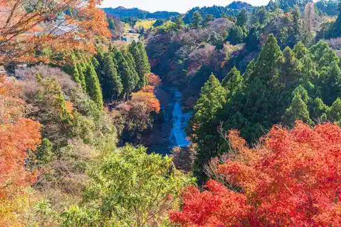
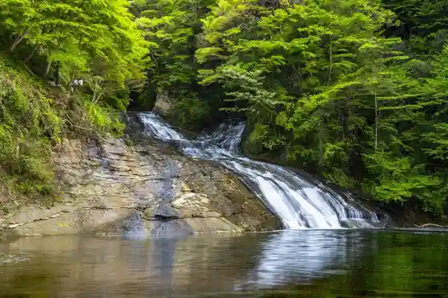
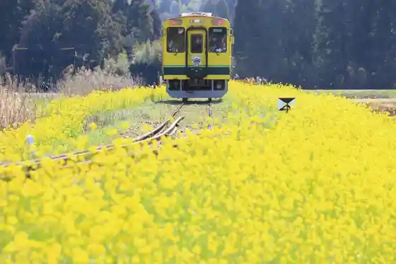
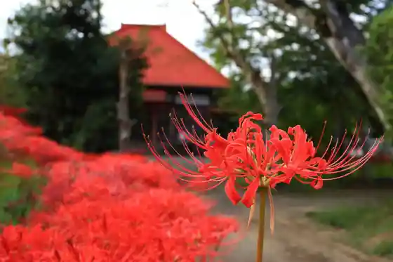

Yoro Gorge
Otaki, Chiba · 0470-80-1146 · Official / source link

Awa Mata Falls
Otaki, Chiba · 0470-80-1146 · Official / source link

Isumi Tetsudo
Otaki, Chiba · 0470-82-2161 · Official / source link

Kisetsu no Hana (Higan Hana) / Jo Shu Tera (Manshu Sa Hana Tera)
Otaki, Chiba · 0470-80-1146 · Official / source link

Otaki Shiro (Prefectural Chuo Museum Otaki Shiro Bunkan)
Otaki, Chiba · 0470-82-3007 · Official / source link
MUJI BASE OIKAWA
Otaki, Chiba · 0470-62-6096 · Official / source link
Takimi En Kenko Village Goriyaku Baths
Otaki, Chiba · 0470-85-0056 · Official / source link
Roadside Station Takeyura no Sato Otaki
Otaki, Chiba · 0470-82-5566 · Official / source link
Yama no Eki Yoro Gorge Kiraku Sato
Otaki, Chiba · 0470-85-0005 · Official / source link
Nichiren Shu Myoho Nama Tera (Asa Men Hara Highlands)
Otaki, Chiba · 0470-85-0330 · Official / source link
Satoyama Nogyo Experience Sukoppu Farm
Otaki, Chiba · 03-4405-9101 · Official / source link
Watanabe Ie House
Otaki, Chiba · 0470-80-1146 · Official / source link
Fika by TAKIVILLAGE
Otaki, Chiba · 080-4202-5834 · Official / source link
Kimizuka Ki no Ko Sono
Otaki, Chiba · 0470-62-6761 · Official / source link
Takanashi Farm
Otaki, Chiba · 0470-82-2155 · Official / source link
Otaki Shoka Hozon Museum (Kyu Kamaya)
Otaki, Chiba · 0470-80-1146 · Official / source link
Kisetsu no Hana (Ajisai) / Asa Men Hara Highlands
Otaki, Chiba · 0470-80-1146 · Official / source link
Tennen Gasu Memorial Museum
Otaki, Chiba · 0470-80-1146 · Official / source link
Sakura no Meisho / Otaki Shiro Shuhen
Otaki, Chiba · 0470-80-1146 · Official / source link